Wszyscy ludzie mają różne zainteresowania. I ja też mam kilka. Ale chciałabym powiedzieć o moim najulubionym.
Bardzo lubię podróżować. Kiedy byłam dzieckiem, robiłam to bardzo często. Byłam z rodziną w wielu miastach i krajach, ale niestety prawie nic nie pamiętam.
Jeśli mówimy o ostatnich podróżach, to mogę wspomnieć o kilku miastach w Polsce, które udało mi się odwiedzić w ciągu 3 miesięcy. Po pierwsze to Siedlce, bo dopiero po przyjeździe zobaczyłam to miasto po raz pierwszy.
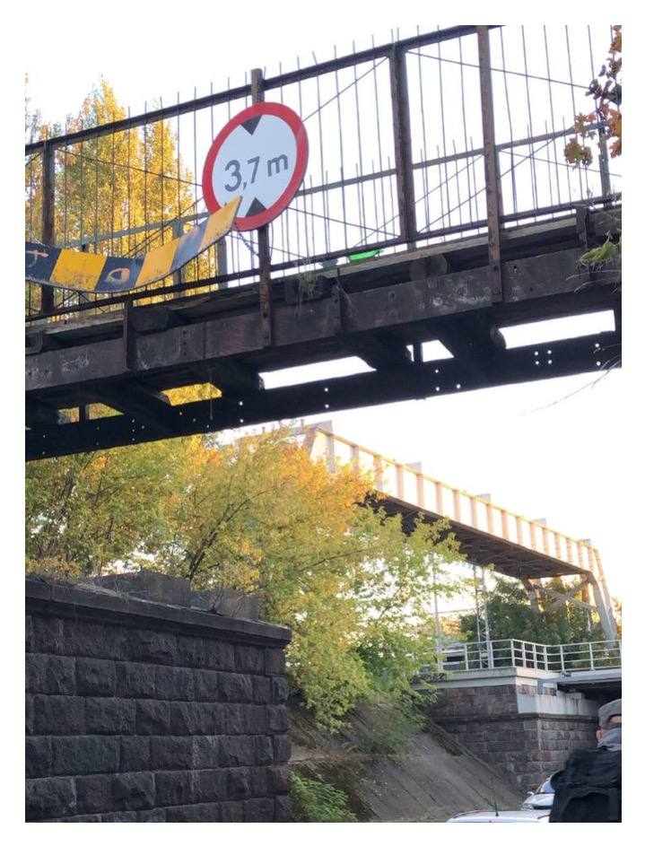 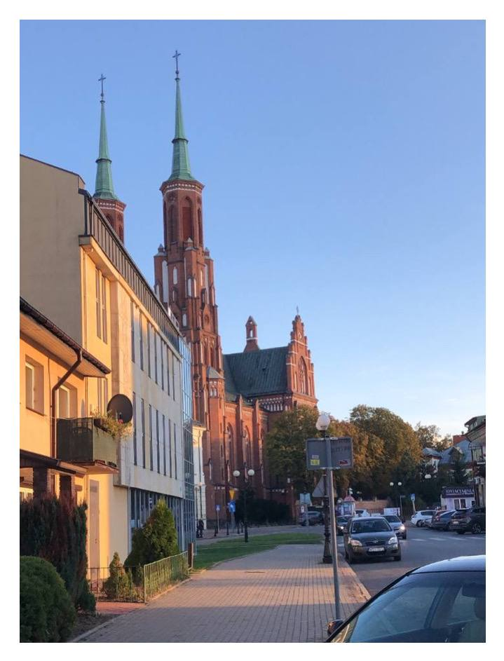 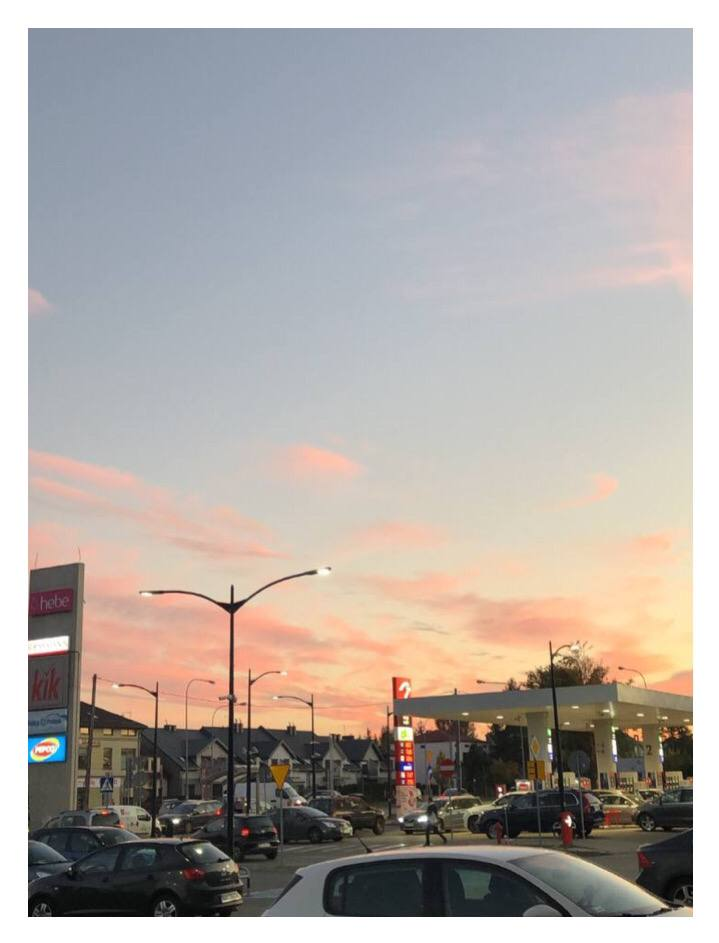Również ja i moi przyjaciele zobaczyliśmy Lublin
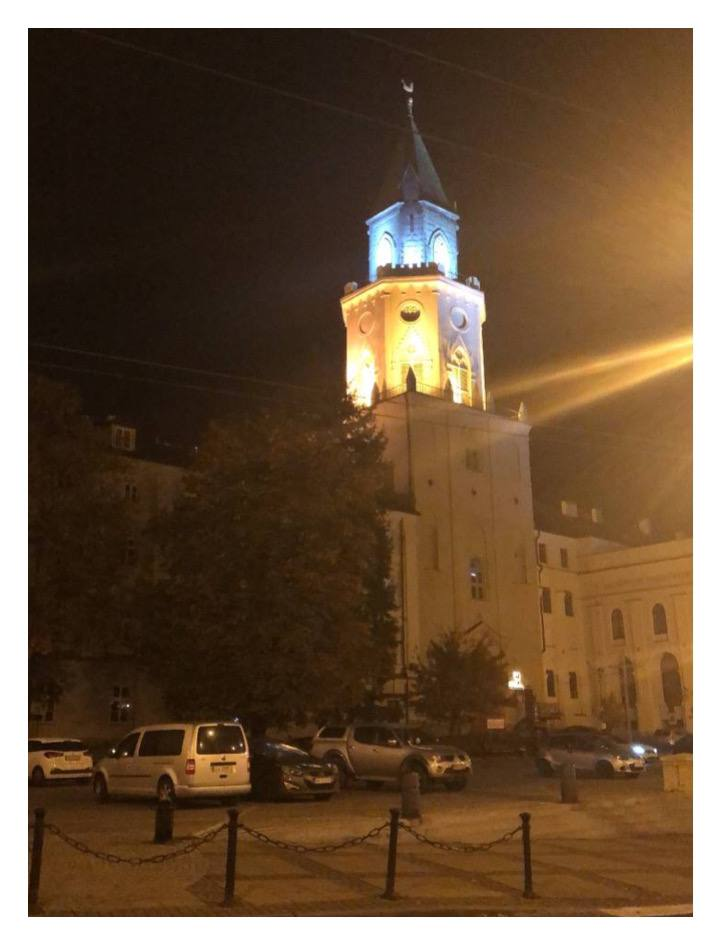 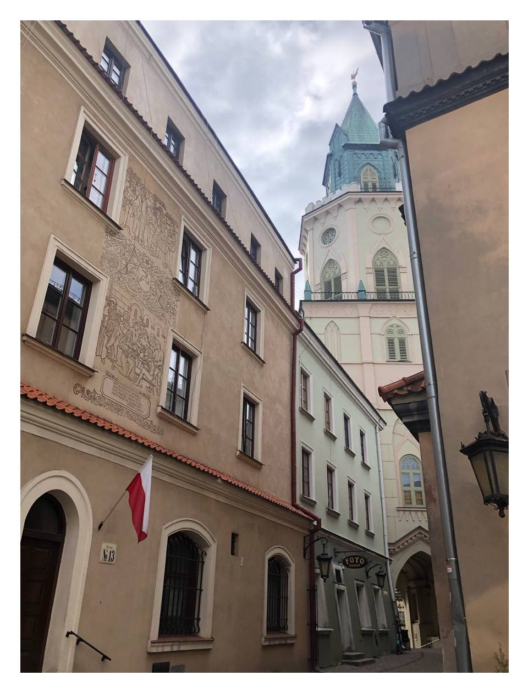 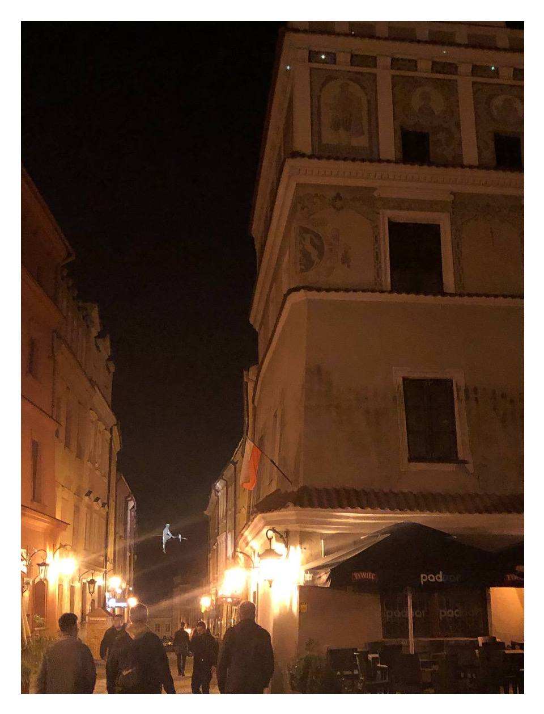 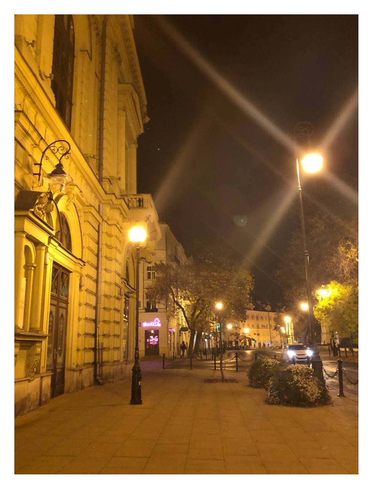Ostatnim razem pojechaliśmy do Warszawy i odwiedziliśmy Muzeum Pałacu Króla Jana III w Wilanowie.To było bardzo interesujące i fajne!
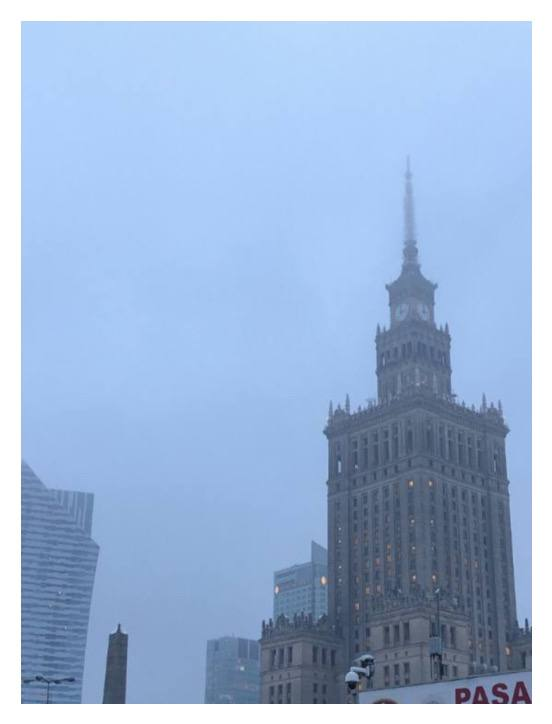 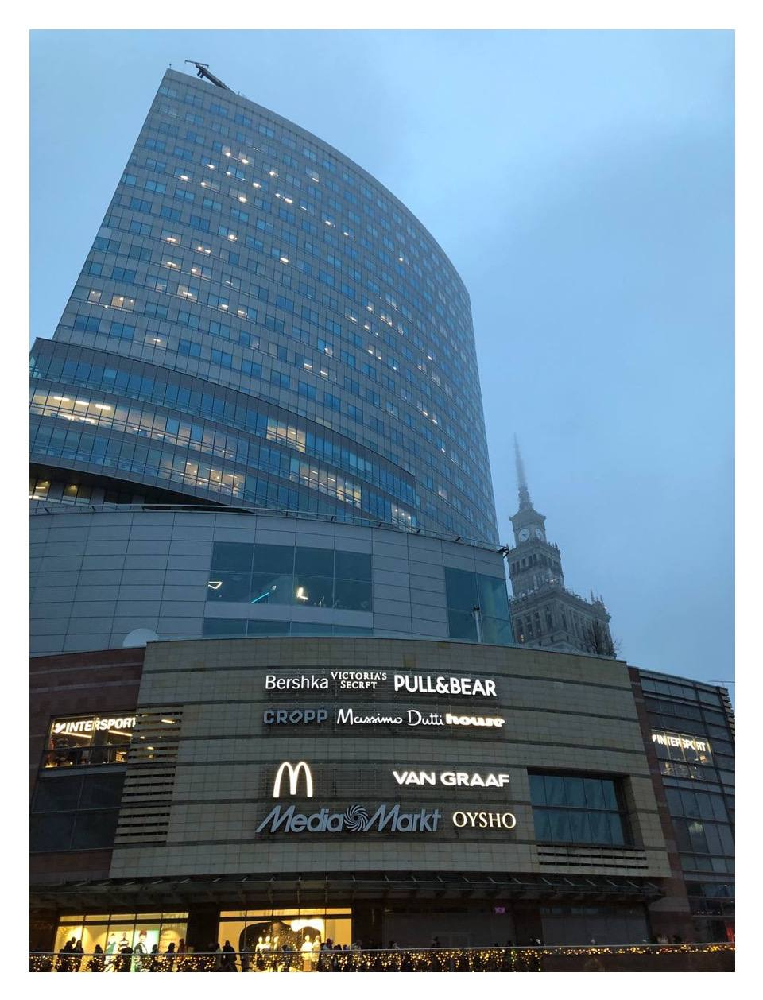 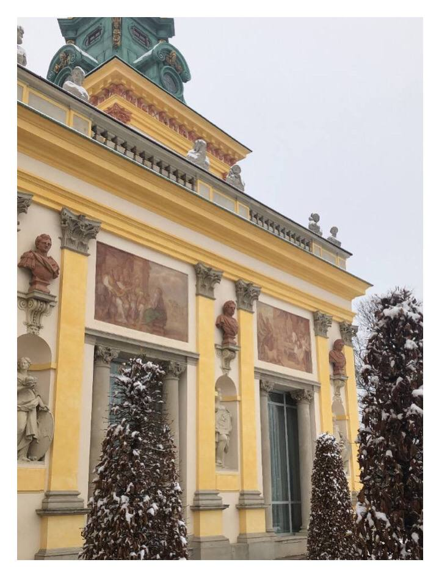 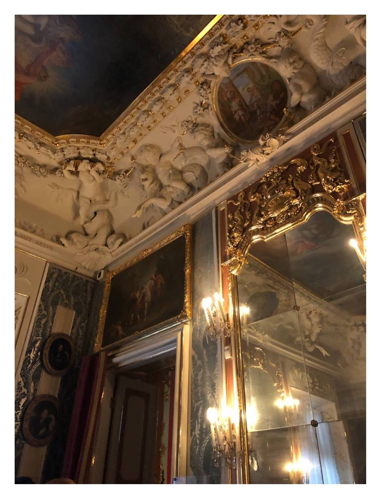